Tende da Sole
Crea la tua oasi di ombra: soluzioni su misura per balconi, terrazze e giardini con tessuti ad alta protezione UV e sistemi motorizzati.
Specializzati nell'installazione delle tende da sole
Ne abbiamo di tutti i tipi e per tutti i gusti. Ogni soluzione è progettata per proteggere i vostri spazi dai raggi solari garantendo eleganza, durata e facilità d'uso.
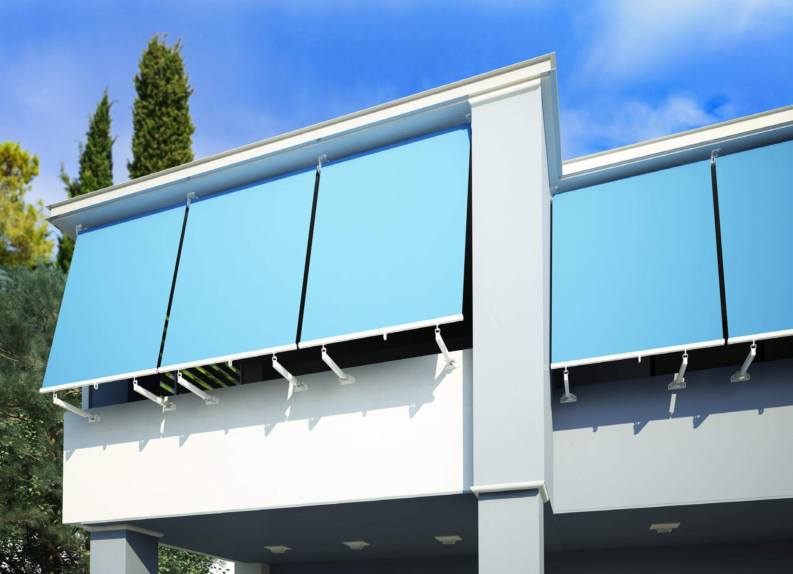
Tenda TME
Tenda a molla (o arganello) con staffe regolabili e con braccetti richiudibili ed inclinabili universali. Viene fornita di serie con ganci del terminale in plastica.
Tinte RAL – verniciatura con polveri poliesteri per esterno. Fornito con molla scarica.
Nella versione ad arganello la piastra verrà fornita con il perno ad estrazione e salvo diversa indicazione sarà montato all'interno della piastra.
Consigliata per:
chiusure per protezione dai raggi solari di balconi, terrazzi e pergolati in legno, alluminio o ferro
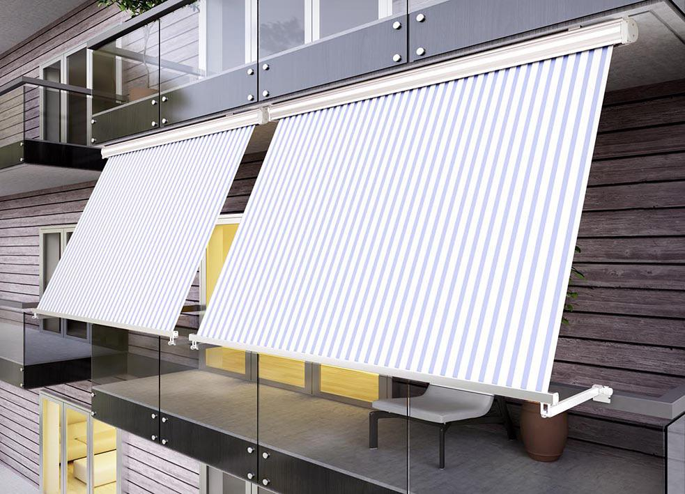
Tenda TMR
Tenda a caduta con cassonetto in alluminio estruso di protezione del tessuto particolarmente indicata per protezione di balconi e verande con funzionamento a molla o ad arganello, idonea per dimensioni fino a 500 cm. La tenda è dotata di braccetti interamente in alluminio richiudibili ed inclinabili con microregolazione che ne permettono di sfruttare al meglio le sue caratteristiche ed adattarle a qualsiasi personalizzazione voluta dal cliente.
I profili in alluminio sono verniciati con polveri poliesteri per esterno e secondo rigidi standard qualitativi.
Consigliata per:
chiusure per protezione dai raggi solari di balconi, terrazzi e pergolati in legno, alluminio o ferro
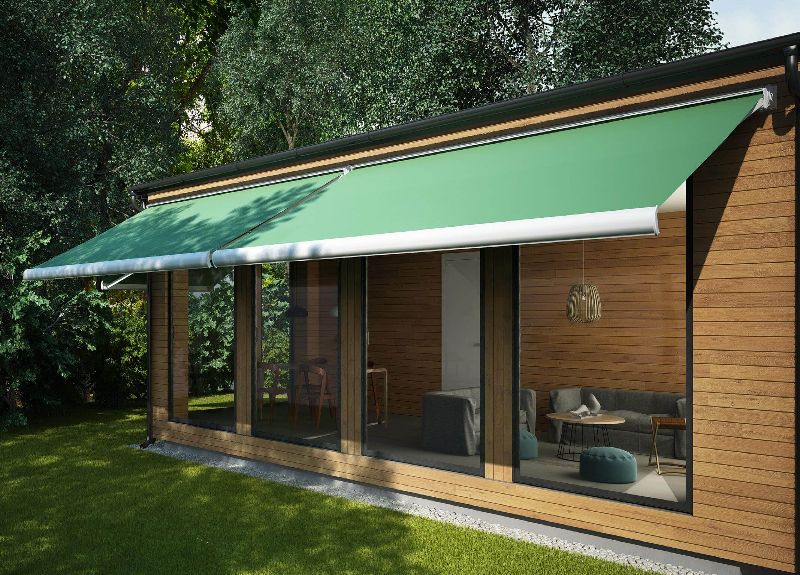
Tenda T-ZIP
Tenda avvolgibile verticale a soluzione ermetica. Di serie disponibile con telo trasparente PVC Cristal saldato orizzontalmente. La tenda a rullo verticale viene fornita con sistema zip ed è ideale per applicazioni interne ed esterne che richiedono tenuta al vento oppure totale oscuramento.
Comando manuale ad arganello o motorizzata.
Consigliata per:
chiusure per protezione dai raggi solari di balconi, terrazzi e pergolati in legno, alluminio o ferro
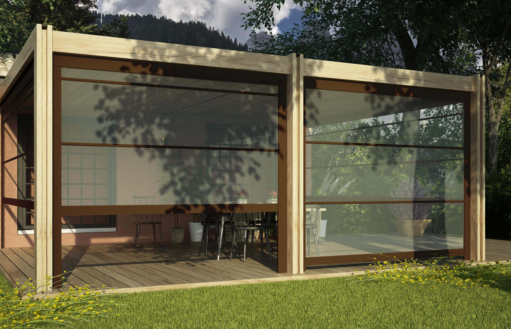
Tenda T-LIBERTY
Tenda con cassonetto di protezione a scorrimento verticale particolarmente indicata per la chiusura di verande, pergole e gazebo. Le guide sono corredate di spazzolini antivento all'interno delle quali scorre il telo e le stecche di rinforzo che la rendono alquanto resistente alla spinta del vento. Sul terminale sono inseriti due fermi in acciaio inox ed uno centrale necessari per mettere in tensione il telo.
La cura degli aspetti tecnici della nuova T-liberty consente la chiusura di più ampie superfici anche fino a cm 450.
Consigliata per:
chiusure a prova di vento di balconi, terrazzi e pergolati in legno, alluminio o ferro
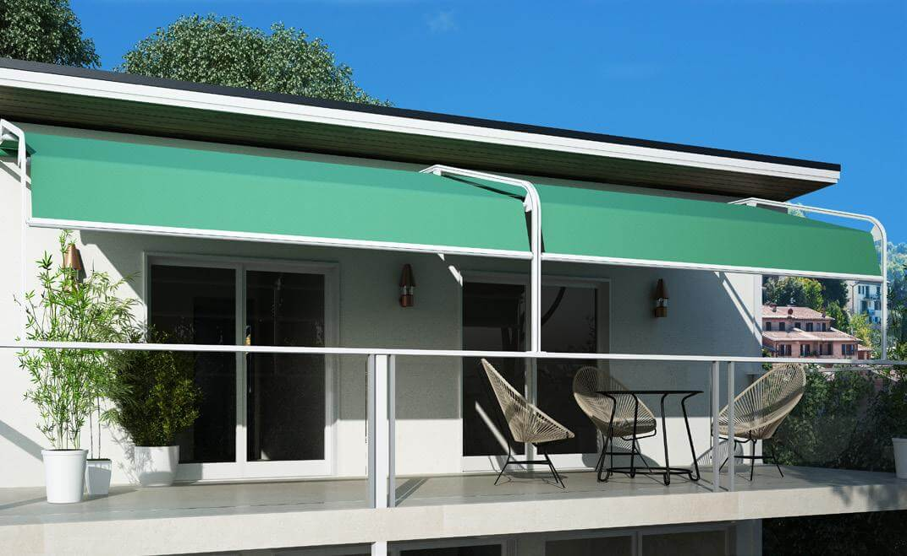
Tenda TGX
Tenda a caduta con e senza cassonetto dotata di guide con cavetto in acciaio INOX da 4mm. Staffe in alluminio estruso regolabili in altezza. Movimentazione ad arganello con asta di manovra da cm 180. La TGX è una tenda adatta alla schermatura di facciate esterne o balconi.
La guidatura laterale la rende più resistente alla spinta del vento.
Consigliata per:
chiusure per protezione dai raggi solari di balconi, terrazzi e pergolati in legno, alluminio o ferro
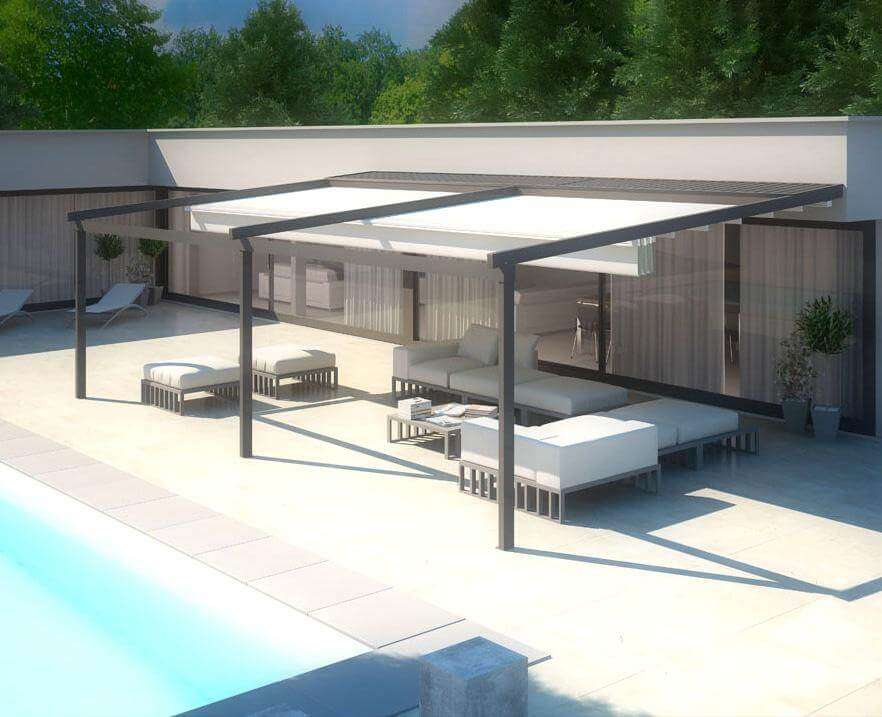
Tenda TSP-ZIP
Tenda a guide laterali provvista di un sistema di traino con cavo di tensionamento nautico ad alta resistenza che collega in modo permanente il rullo avvolgitore al terminale, mantenendo sempre in trazione il telo in qualsiasi posizione si desideri arrestarlo. La struttura è provvista di serie del motore elettrico e del cassonetto di copertura che unisce alla protezione del tessuto una linea elegante e priva di spigoli.
Applicabile su strutture esistenti quali pergolati in legno, ferro, alluminio o direttamente sull'immobile.
Consigliata per:
balconi, terrazzi, giardini, locali pubblici, strutture esistenti in legno, ferro, alluminio
Tenda T-HIDE
Le tende da sole a braccio estensibile garantiscono ampi spazi di copertura dal sole e ingombri minimi, grazie all'elegante box che contiene la tenda una volta chiusa. La movimentazione, così come l'estensione o l'inclinazione possono essere attivate tramite telecomando o smartphone, che ne controllano anche l'illuminazione a led integrata al cassonetto.
Una soluzione avanzata che resiste anche al vento forte grazie al sistema brevettato FlexControl.
Vincitrice del premio iF Design Award
Consigliata per:
chiusure per protezione dai raggi solari di balconi, terrazzi, facciate, vetrate di abitazioni e locali
Tenda TBC
Struttura caratterizzata da un cassonetto a scomparsa totale il quale unisce alla protezione del tessuto e dei bracci una linea elegante e priva di spigoli. Bracci a doppio cavetto inguainato o a catena inox. Il cassonetto viene fornito in tre profili separati. I supporti consentono di installare la tenda sia a parete che a soffitto e, oltre alla vite di microregolazione che consente un corretto accoppiamento dei profili, dispongono anche di un nuovo sistema di inclinazione della tenda con vite passante.
Verniciatura con polveri poliesteri eseguita con rigidi standard qualitativi.
Consigliata per:
chiusure per protezione dai raggi solari di balconi, terrazzi, facciate, vetrate di abitazioni e locali
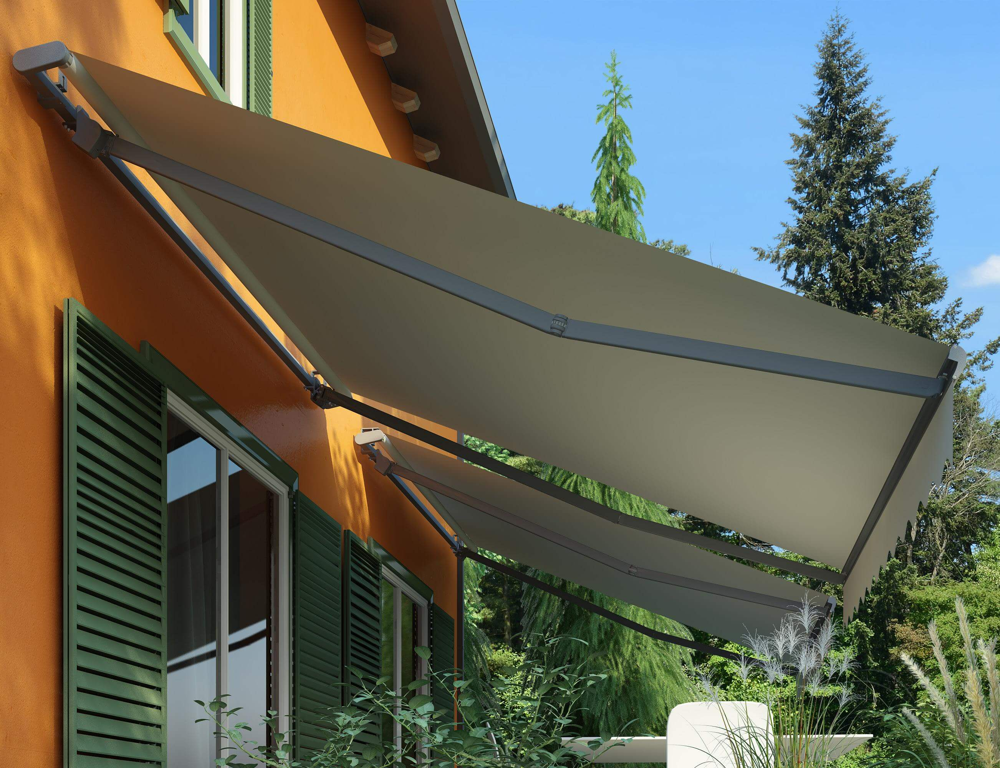
Tenda TBQ
La TBQ è una tenda a bracci estensibili con struttura su barra quadra 40x40x1,5 in acciaio rinforzato zincata e verniciata. La tenda viene fornita con un nuovo registro bracci che ne permette la regolazione micrometrica tramite brugola a vite per una inclinazione massima di 80°.
Tinte RAL o verniciatura con polveri poliesteri per esterno.
Consigliata per:
chiusure per protezione dai raggi solari di balconi, terrazzi, facciate, vetrate di abitazioni e locali
Tenda TMG
Tenda a molla (o arganello) con guide laterali per terrazzi o giardini. I rulli frangivento sono posti ad una distanza tra loro che può variare ma che non è mai superiore a 150 cm. Il tessuto scende per un metro dopo la curva. Dalla larghezza 400 il frangivento in curva sarà con due gole.
Tinte RAL – verniciatura con polveri poliesteri per esterno.
Consigliata per:
chiusure per protezione dai raggi solari di balconi e terrazzi
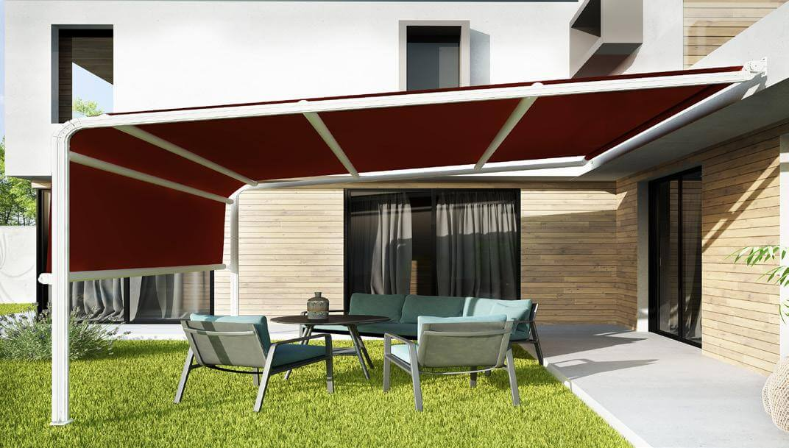
Tenda TMA
Tenda a molla (o arganello) con guide laterali per terrazzi o giardini di grandi proporzioni. Le misure si intendono centro piede/centro curva. Frangivento ogni 150 cm + 2 in curva. Tessuto che scende 1 mt dopo la curva.
Tinte RAL – verniciatura con polveri poliesteri per esterno.
Consigliata per:
chiusure per protezione dai raggi solari di balconi e terrazzi
I Nostri Tessuti e Tecnologie
Non solo ombra, ma una vera barriera termica.
| Tipologia Tessuto | Caratteristiche Principali | Manutenzione | Garanzia |
|---|---|---|---|
| Acrilico (Tempotest) | Idrorepellente, traspirante, non scolora | Bassa | 8 Anni |
| Microforato (Soltis) | Visibilità esterna, massimo riciclo aria | Molto Bassa | 5 Anni |
| PVC Oscurante | Impermeabile 100%, oscuramento totale | Media | 10 Anni |
Automazione e Sensori Intelligenti
Dimentica la fatica del movimento manuale. Con i motori Somfy di ultima generazione puoi controllare le tue tende con un simple click o tramite lo smartphone.
- AnemometroLa tenda si chiude da sola in caso di forte vento.
- Sensore SoleSi apre automaticamente ai primi raggi del mattino.
- Controllo via AppGestisci l'ombra anche quando non sei a casa.
- Silent MotionMotori ultra-silenziosi ad alta precisione.

Un risparmio reale in bolletta
Una corretta schermatura solare può ridurre la temperatura interna della tua casa fino a 5°C in estate, riducendo drasticamente l'uso del condizionatore e abbattendo i costi elettrici.
Lo sapevi?
"L'acquisto di tende da sole rientra nelle agevolazioni fiscali per il risparmio energetico. Possiamo gestire per te tutta la pratica ENEA per ottenere la detrazione del 50% in 10 anni."

Passione per l'Outdoor
Alcune delle nostre realizzazioni: tende a bracci, a caduta e soluzioni speciali integrate nel design della casa.
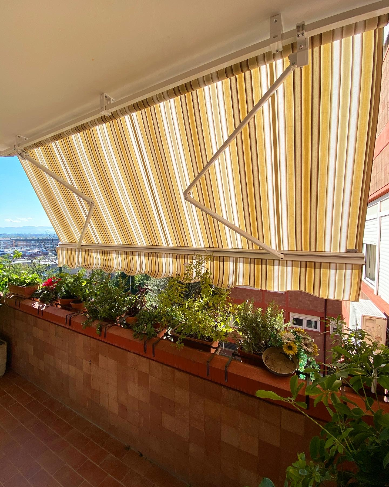
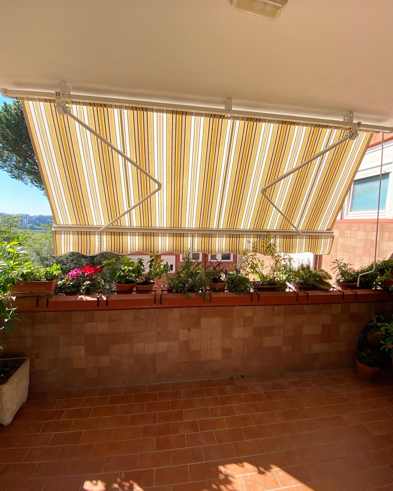
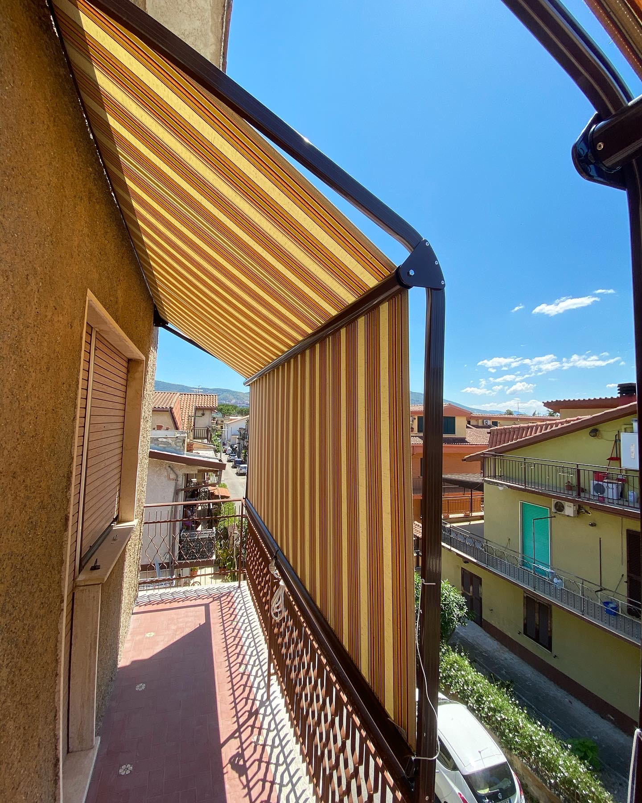
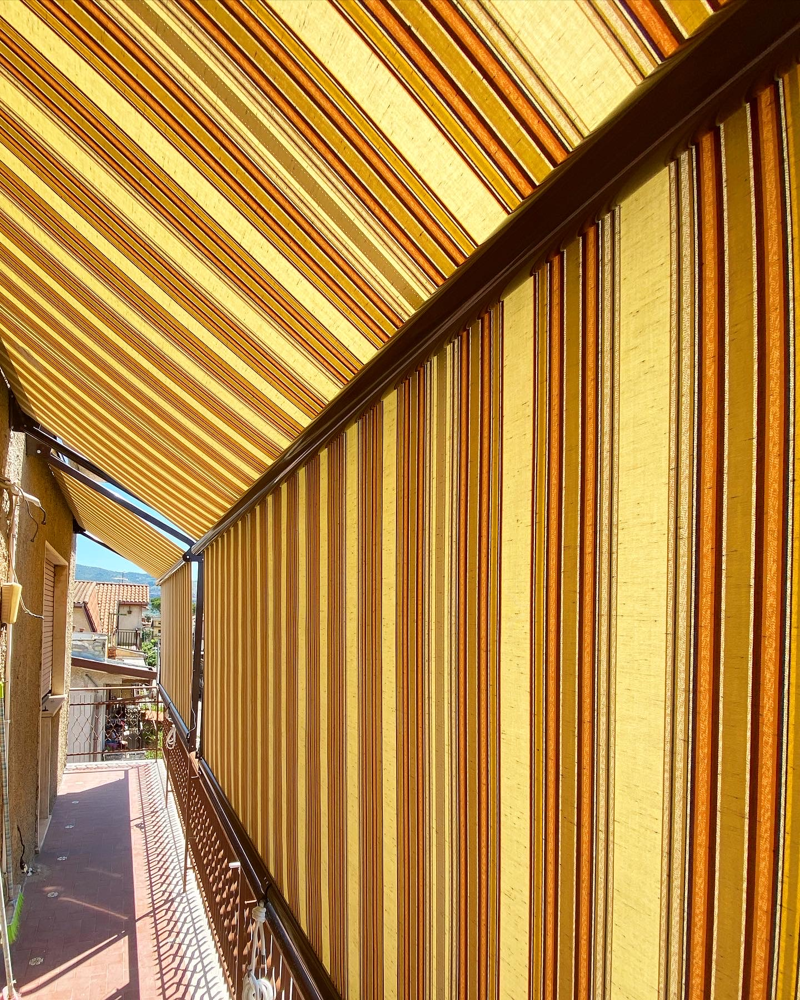
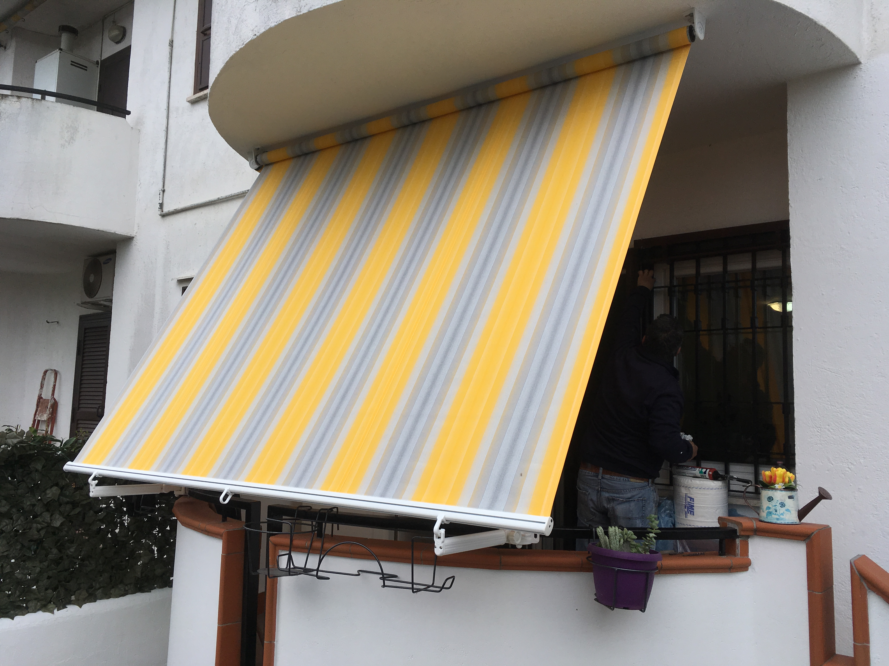
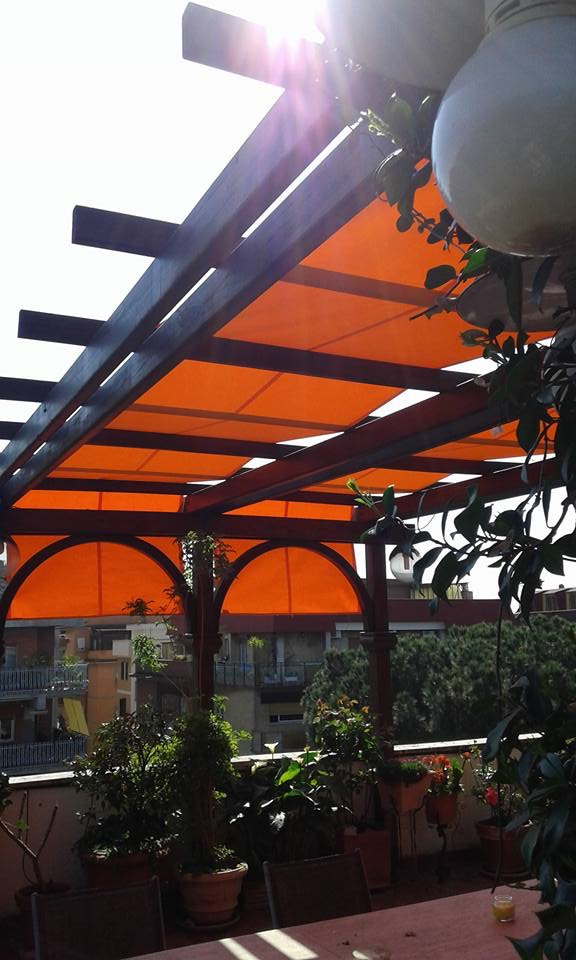
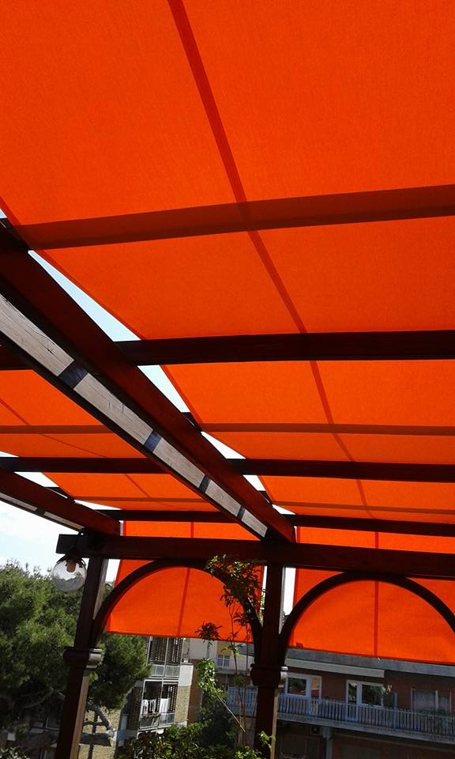
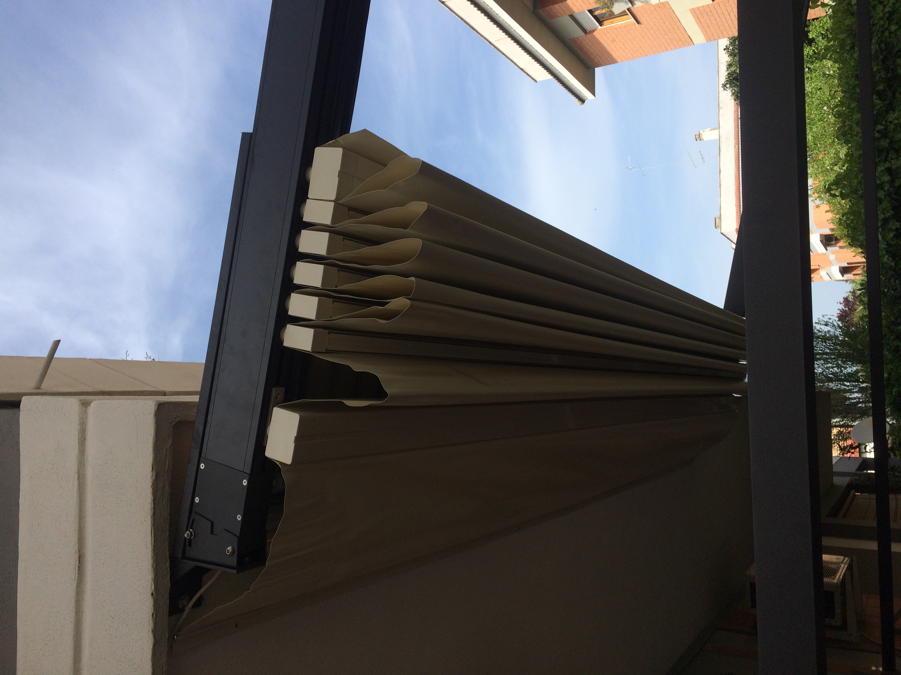
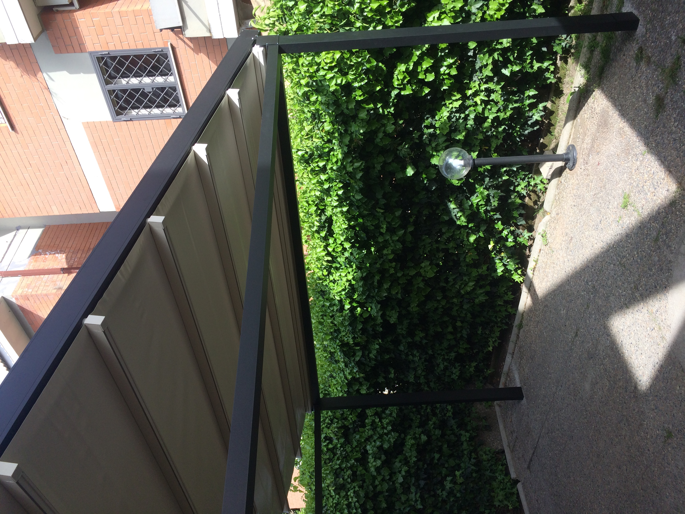
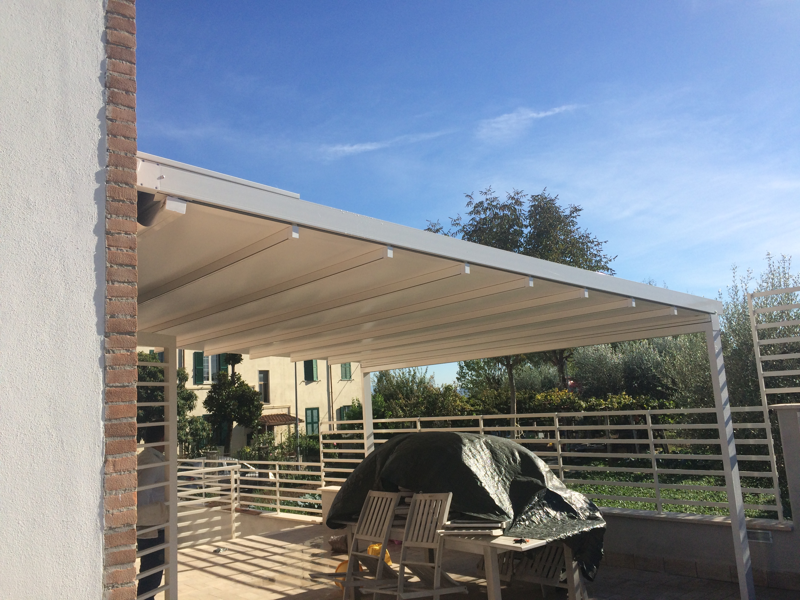
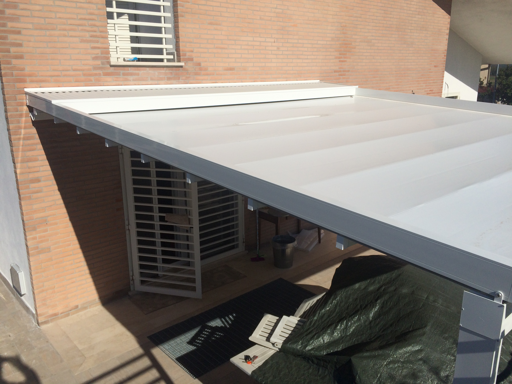
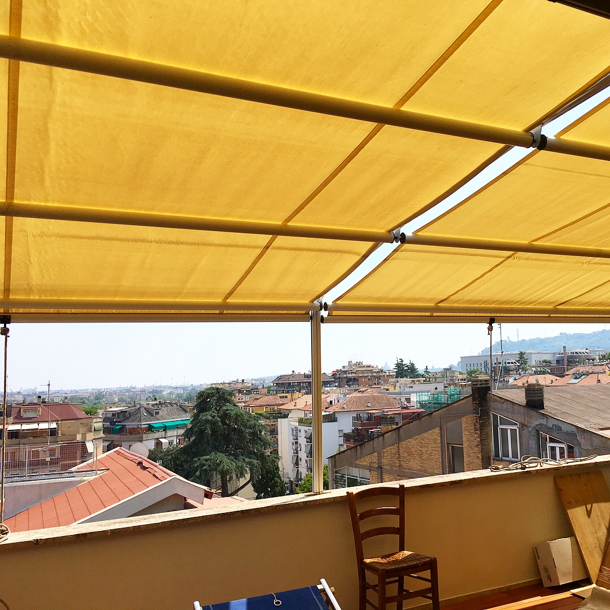